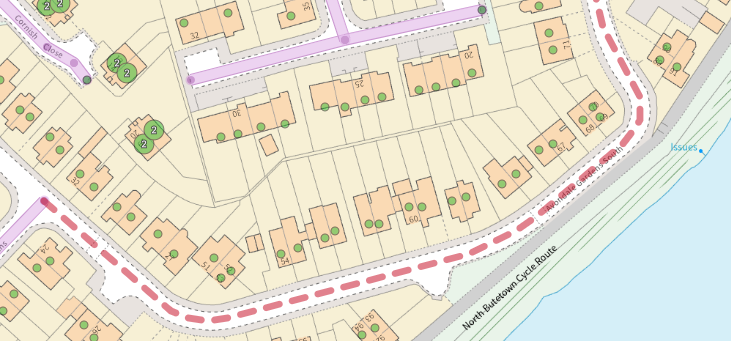
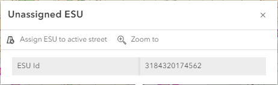

Alternative ways to assign ESUs to streets |
Top Previous Next |
|
You may have unassigned ESUs which are displayed when the Unassigned ESU layer is displayed or you may wish to assign an existing ESU that is already assigned to a Type 1 Street to a new Type 3 Street. Assign an unassigned ESU to a street•First find or add the street to which you wish to assign your ESU. •Click on the unassigned ESU on the map. These are displayed as dotted lines on the map e.g.  •Once you have clicked on the unassigned ESU the following dialog is displayed:  •Select Assign ESU to active street and the ESU is assigned to the street. •Click Save you save your changes. Assign an already assigned ESU to another streetIf you wish to assign an ESU to a street that is already assigned to another street then these are the steps. •First find or add the street to which you wish to assign your ESU. •Now click on the ESU on the map that you wish to assign to your street and the following dialog is displayed: •Select Assign ESU and the ESU is assigned to the street. •Click Save you save your changes.
|